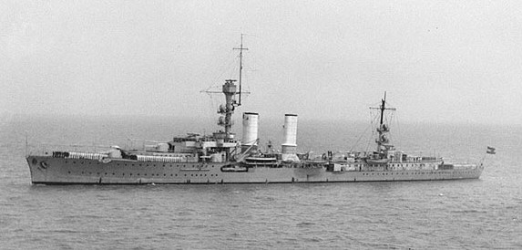

| Spesifikasi | Detail |
|---|---|
| Jenis | Penjelajah Ringan |
| Tonase Standar | 5.400 ton |
| Tonase Penuh | 6.990 ton (setelah modernisasi) |
| Panjang | 155 m (508 ft 6 in) secara keseluruhan |
| Lebar | 14,2 m (46 ft 7 in) |
| Draf | 5,53 m (18 ft 2 in) pada beban penuh |
| Propulsi | 2 x turbin uap Brown, Boveri & Cie, 4 x ketel uap air tabung, 2 x poros baling-baling |
| Tenaga | 46.500 shp (34.700 kW) |
| Kecepatan Maksimum | 29 knot (54 km/jam; 33 mph) |
| Jarak Jelajah | 5.300 mil laut (9.800 km) pada 18 knot (33 km/jam) |
| Awak | Antara 591 dan 650 orang |
| Persenjataan Utama | 8 x meriam 15 cm (5.9 in) SK C/25 (8 x 1) |
| Persenjataan Anti-Pesawat | Awalnya beberapa meriam 8.8 cm (3.5 in) dan meriam yang lebih kecil, kemudian ditingkatkan termasuk:
|
| Torpedo Tubes | 4 x 53.3 cm (21 in) torpedo tubes (2 x 2) |
| Pesawat | 2 x pesawat apung Heinkel He 60 atau Arado Ar 196 |
| Fasilitas Penerbangan | 1 x ketapel |
| Lapisan Baja Sabuk | Hingga 75 mm (3 in) |
| Lapisan Baja Dek | Hingga 40 mm (1.6 in) |
| Lapisan Baja Kubah Meriam | Hingga 20 mm (0.79 in) |
| Tanggal Diluncurkan | 7 Januari 1925 |
| Nasib | Hancur akibat serangan udara Inggris pada 9 April 1945 |